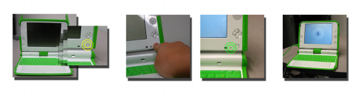
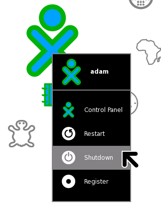

| Ouvrir le XO | Index | À propos des ordinateurs |

Pour démarrer le XO, appuyez sur le bouton de mise en marche à côté du coin droit en bas de l'écran. Le XO prend environ deux minutes pour démarrer.
Si la batterie a besoin d'être chargée, l'indicateur lumineux près du bouton de mise en marche sera rouge. Insérez alors l'adaptateur secteur dans la partie gauche du XO puis insérez le cordon d'alimentation dans une prise. Faites-le lorsqu'une lumière rouge apparaît ou que le XO ne démarre pas.
Si vous avez des difficultés à démarrer votre XO, référez-vous au chapitre Réparations pour y trouver des solutions.
Après que vous ayez appuyé sur le bouton de mise en marche et que le XO ait démarré, l'écran vous demandera votre nom. La prochaine fois que vous le démarrerez, le XO se souviendra de votre nom et démarrera directement sur la Vue Accueil. Par la suite, vous pourrez apprendre comment changer le nom pour un surnom de votre choix.

Vous devriez toujours suivre cette procédure d'arrêt parce qu'elle permet à votre XO de mettre à jour ses fichiers internes avant de s'éteindre, ce qui lui permettra de trouver ce qui est important lorsque vous le démarrerez à nouveau. Et même si quelque chose de désagréable devait se produire, par exemple que vous n'arriviez plus à bouger votre pointeur ou encore à cliquer, vous pourriez alors toujours faire un arrêt d'urgence en appuyant - et en gardant appuyé - le bouton de mise en route durant quelques secondes. Soyez attentif à ce que votre bouton de mise en marche ne reste pas bloqué dans la position appuyée. Si cela arrivait, le XO ne détecterait pas l'arrêt de votre XO et ne pourrait donc le traiter. Si cela arrivait, référez-vous au chapitre Réparations pour des informations supplémentaires.
| Ouvrir le XO | Index | À propos des ordinateurs |